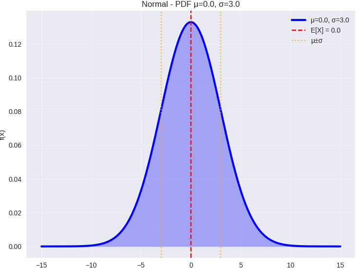
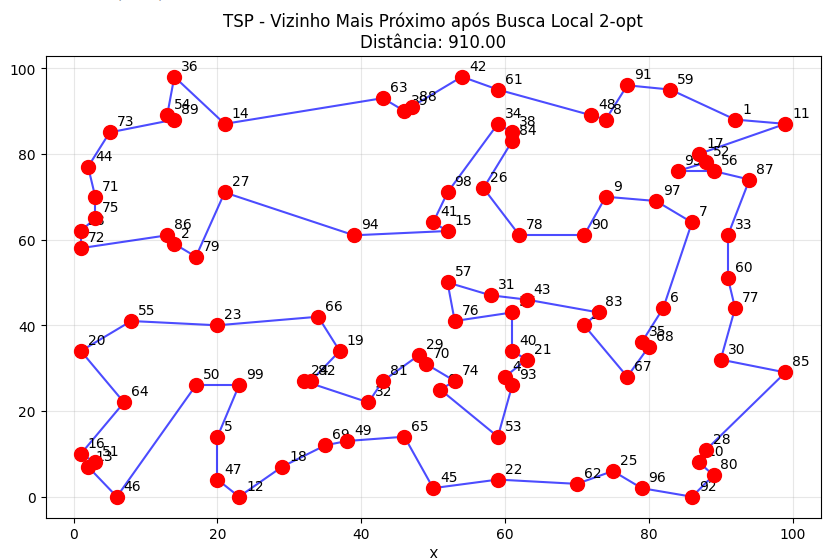
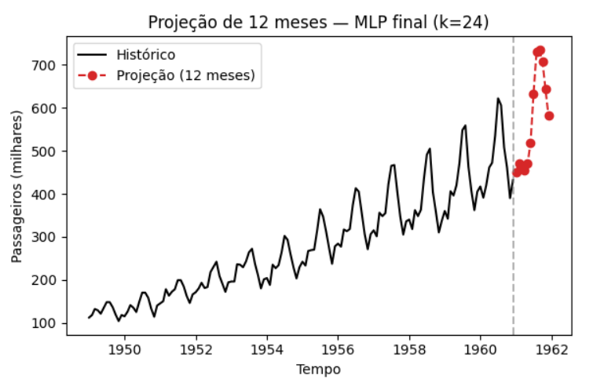

Ensino & Laboratório Aberto
Adoto uma metodologia hands-on, integrando teoria à prática por meio de ferramentas computacionais. Com o objetivo de proporcionar uma experiência de aprendizado baseada na resolução de problemas, disponibilizo notebooks (Google Colab) que contêm modelos matemáticos, algoritmos e implementações reais aplicadas às minhas disciplinas de graduação e pós-graduação.
Graduação (Engenharia de Produção da UFSCar-Sorocaba)

Modelos Probabilísticos Aplicados à Engenharia de Produção
Esta disciplina articula a teoria das probabilidades e a inferência estatística à resolução de problemas na Engenharia de Produção. O programa aborda desde axiomas básicos, variáveis aleatórias e distribuições discretas e contínuas, até a aplicação do Teorema Central do Limite e testes de aderência (Qui-Quadrado, Kolmogorov-Smirnov). A metodologia integra o rigor matemático à prática computacional, capacitando o discente a modelar sistemas sob incerteza e validar modelos preditivos em cenários reais.
Abrir com Google Colab: Distribuições de Probabilidade de Ampla Aplicação
Pesquisa Operacional 3
Esta disciplina foca em tópicos modernos de Pesquisa Operacional aplicados à otimização de sistemas de produção e logística. O conteúdo abrange programação linear inteira mista, otimização multiobjetivo, programação estocástica e métodos heurísticos/metaheurísticos. A metodologia enfatiza a modelagem e a implementação computacional de soluções para problemas reais, utilizando ferramentas como Python e Gurobi/CPLEX para articular o rigor teórico à prática procedimental da Engenharia de Produção.
Abrir com Google Colab: Visualizando a busca em metaheurísticas populacionais
Tópicos em Inteligência Artificial
Esta disciplina introduz algoritmos de aprendizado de máquina supervisionado e não supervisionado, com foco na preparação de dados, modelagem preditiva e descritiva. O programa abrange técnicas de classificação, regressão, agrupamento e regras de associação, buscando soluções baseadas em dados para problemas de Engenharia de Produção, especialmente em interface com a Pesquisa Operacional. A metodologia fundamenta-se no desenvolvimento de projetos computacionais via Google Colab e na análise crítica de artigos científicos.
Abrir com Google Colab: Redes neurais artificiais (RNA) para previsão em séries temporais.